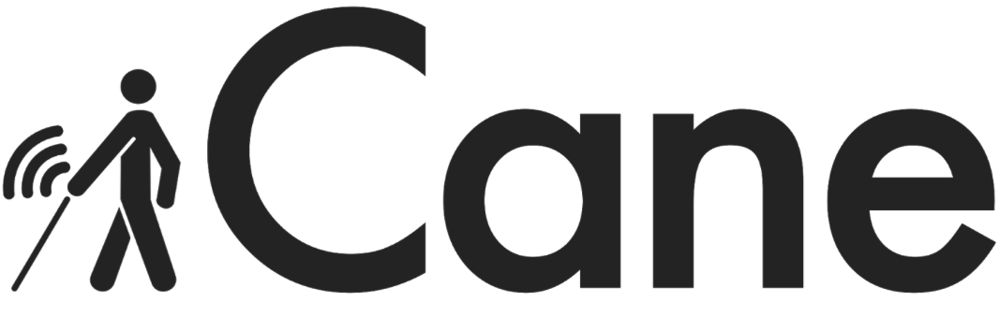

Phone
+1 857 209 6440
Email
rebei@mit.edu
iCane Prototype
Assistive Technology for the Visually Impaired
Design Process
2.00 Intro to Design Project

iCane is an attachment to white canes to alert visually impared users of hazardous protruding objects that a white cane cannot sense. For this project, I was a part of a team of 4 to design a product with the theme independance.
People
Rima Rebei, Federico Bescotti, Shirley Cao, Ileana Diaz
We met with MIT faculty Paul Parravano. Mr. Parravano serves as MIT’s campus federal relations officer, accompanying MIT’s President on regular visits to Washington and hosting campus visits by elected officials and other dignitaries. However, on top of that, he is also blind and was able to shed insight on the various difficulties he encounters day to day. You can hear his story here:
Through talking with Paul and a lot of research, we wanted to create a device that would allow users of white canes to also know when they encounter protrouding objects that will not be sensed by a white cane. Our final idea after our big brainstorming session, was to use an ultrasonic sensor to detect the distance of objects from the handle of the white cane.
iCane Model Sketch
Looks-Like Model
Ideally, iCane would not be as large as our works-like model. However, due to the time contraint we were on, we decided to make two different prototypes. One "looks-like" model that would show how our device would look with smaller electronics on board. Our other prototype was a "works-like" model to demenstrate how iCane would actually work.
Works-Like Model
What We Used
- Arduino Uno
- Ultrasonic Sensor
- Vibration Motor
- Switch
- White Cane
Final Product

Similar Projects
Click below to explore more of my projects!